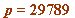
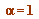
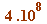
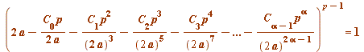
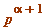
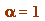
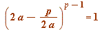

And a brief return to 'exceptional' primes
Here I really will be brief and to the point.
Earlier I remarked that we had an early criterion for a prime being 'exceptional' (in the context of quarter Gauss factorials, but indeed more generally), and that we had established  to be the only (initial, meaning at ) exceptional prime up to .
It would take me too far afield if I was to outline the meaning of higher exceptionality, but taking the notion of general -exceptionality as a given (what you encountered earlier was the case ) we later arrived at the following theorem
(which is Theorem 9 of our paper #9 at http://www.johnbcosgrave.com/publications.php):
a prime  is -exceptional (for Gauss factorial quarter intervals) if and only if:
is -exceptional (for Gauss factorial quarter intervals) if and only if:
 (mod )
(where '' has its usual meaning, as throughout this talk)
and thus, in particular at , a prime  is -exceptional if and only if:
is -exceptional if and only if:
 (mod  )
)
And finally I show you that test applied to all such primes up to 50,000:
| > | st:= time[real]():
for p from 5 by 4 to 50000 do if isprime(p) then a||p := a_sign(p): if (2*a||p - p/(2*a||p))&^(p-1) mod p^2 = 1 then print(``); lprint(`The prime`, p, `is 1-exceptional for Gauss quarter factorials.`) fi fi od: print(``); lprint(`That computation took`, time[real]() - st, `seconds.`); |
| `The prime`, 29789, `is 1-exceptional for Gauss quarter factorials.` | |
| `That computation took`, .735, `seconds.` |
| > |
That was not the best application of the test - a much facter one is what we used - but a full explanation would take us further afield.
_________________